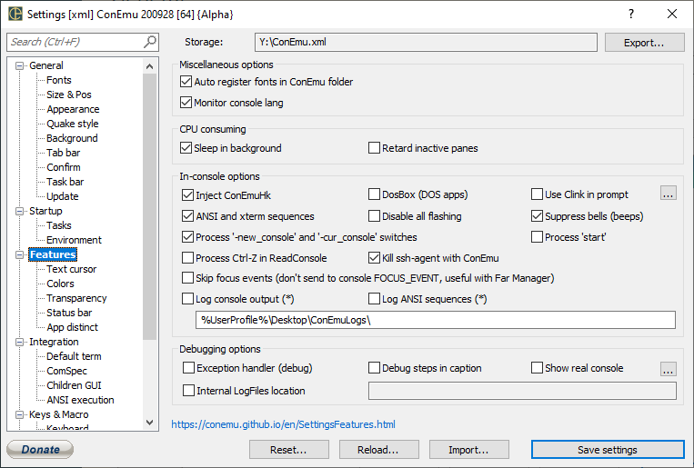

Settings: Features

Miscellaneous options
Auto register fonts Search, register for process, and use first *.ttf file in conemu folder
Monitor console lang Monitor input language change in real console (e.g. Far Manager XLat switching support)
Show real console Show real console on startup
Debug steps in caption Show some debug information in ConEmu title E.g. plugin communication steps.
Sleep in background Reduce FPS when ConEmu loose focus
Focus in child windows Set focus in xshell/putty/notepad/etc. when ConEmu is activated or tab switched.
Show ‘was hidden’ warning Show ‘ConEmu was hidden from some program’ message in TSA
Retard inactive panes Retard inactive but visible split-panes in the active ConEmu window
Disable all flashing Disable all flashing (from consoles) on Windows taskbar. 3rd-state - allow short flashing.
In-console options
Inject ConEmuHk Allow injecting ConEmuHk.dll in every process of ConEmu console window. Required for many features (ANSI X3.64, -new_console argument, GUI apps in ConEmu tabs, ...) and elimination of several problems (telnet in Windows 7, dialogs and menus behind of ConEmu window, chcp hungs, and so on...)
DosBox (DOS apps) Enables DosBox integration
Use Clink in prompt Use clink to extend command prompt (cmd.exe) http://code.google.com/p/clink/
ANSI X3.64 / xterm 256 colors Enable processing of ANSI escape sequences, ‘Inject ConEmuHk’ must be checked if you want to work with second level processes (e.g. cmd.exe -> app.exe)
Process '-new_console' and '-cur_console' switches Enable processing of '-new_console' and '-cur_console' switches in your shell prompt, scripts etc. started in ConEmu tabs
Exception handler (debug)
Portable registry Enable portable mode for Far manager
Suppress bells Stop annoying bells produced by echoing char(7) to console, Inject ConEmuHk is required